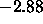
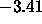
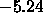

A short example dialogue for the construction of an XOR network might clarify the use of the editor. First the four units are created. In the info panel the target name ``input'' and the Target bias ``0'' is entered.
Status Display Command Remark> Mode Units switch on mode units
Units> set mouse to position (3,5)
Units> Insert Target insert unit 1 with the attributes
of the Target unit here.
repeat for position (5,5).
Units> name = ``hidden'', bias =

Units> Insert Target position (3,3); insert unit 3
Units> name = ``output'', bias =

Units> Insert Target position (3,1); insert unit 4
Units> Return return to normal mode
> Mode Links switch on mode links
Links> select both input units
and set mouse to third unit
(``hidden'')
Links> specify weight ``''
Links> Make to Target create links
Links> set mouse to unit 4 (``output'');
specify weight ``

''Links> Make to Target create links
Links> deselect all units and
select unit 3
Links> set mouse to unit 4 and
specify ``'' as weight.
Links> Make to Target create links
Now the topology is defined. The only actions remaining are to set the IO types and the four patterns. To set the IO types, one can either use the command Units Set Default io-type, which sets the types according to the topological position of the units, or repeatedly use the command Units Set io-Type. The second option can be aborted by pressing the Done button in the popup window before making a selection.